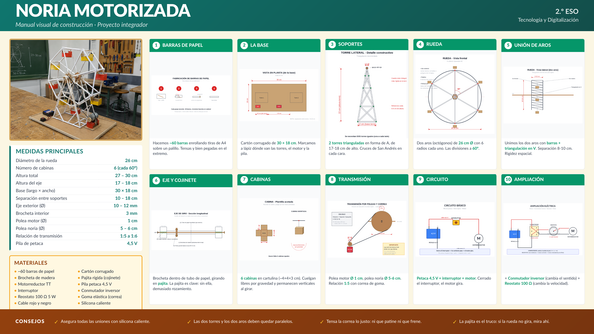

🎡 Noria motorizada
Diseñar y construir, en grupo, una noria motorizada de papel que combina estructura triangulada, transmisión por poleas, circuito eléctrico con conmutador inversor y reostato, y plano técnico acotado. Cuatro unidades del curso en un solo trabajo.

Pulsa el póster para verlo a tamaño completo. Está pensado para proyectarse en clase durante el montaje.
📥Material descargable
Estos dos documentos forman el pack completo del proyecto. El póster es para proyectar en clase como manual visual; el cuadernillo es lo que cada grupo rellena.
🧩Unidades del curso que integra
Este proyecto es el cierre natural del curso. Repasa de un solo golpe los aprendizajes de cuatro unidades:
📏Medidas principales
- Diámetro de la rueda: 26 cm
- Altura total: 27-30 cm · Ancho del eje: 22 cm
- Base: 30 × 18 cm · Barras de cabina: 5-6 cm · Cabinas: 6
- Eje: brocheta interna (3 mm) + pajitas (5 mm) como cojinete
- Polea motor: 12-15 mm · Polea noria: 50-60 mm
- Relación de transmisión: 1:4 a 1:6 → la rueda gira lenta y con torque
- Alimentación: pila de petaca 4,5 V con motorreductor (~150 rpm)
🛒Materiales por grupo
~60 folios de papel A4 enrollado (barras)
Brochetas de madera (eje)
Pajitas de plástico (cojinetes)
Motorreductor 5 V (~150 rpm)
Pila petaca 4,5 V + portapilas
Interruptor + conmutador inversor
Reostato (potenciómetro)
Cartón corrugado (base 30 × 18 cm)
Goma elástica o correa
Cola caliente · silicona · cinta
🔄10 pasos de fabricación
El póster lo desglosa visualmente. En orden:
1Barras de papel
2La base
3Soportes
4Rueda
5Unión de aros
6Eje y cojinete
7Cabinas
8Transmisión
9Circuito
10Ampliación
📋Lo que tienen que entregar los grupos
- La noria construida y funcionando. Demostración en clase.
- El cuadernillo del alumno (PDF arriba) relleno por el grupo, con:
- Bocetos individuales de cada integrante.
- Plano acotado del grupo a escala 1:2.
- Cálculo de la relación de transmisión con sus datos reales.
- Esquema eléctrico con símbolos normalizados.
- Cuestionario (6 preguntas conceptuales).
- Memoria del proceso y autoevaluación.
📊Rúbrica de evaluación
| Apartado | Peso |
|---|---|
| Funcionamiento de la noria (gira con suavidad y soporta carga) | 35% |
| Estructura y estabilidad (triangulación correcta, no vibra) | 20% |
| Transmisión y mecanismos (cálculo correcto + montaje limpio) | 15% |
| Circuito eléctrico (básico + ampliación con conmutador / reostato) | 15% |
| Acabado y presentación visual | 5% |
| Cuadernillo del alumno completo y bien razonado | 10% |
| Trabajo en grupo (modificador) | ±1 |
💡 Sugerencia de organización: conviene dedicar al menos 6-8 sesiones (2-3 semanas) y dividir el aula en grupos de 4. Una sesión inicial para bocetos y plano, 4-5 sesiones de taller, una de cableado y pruebas, una final de exposición y entrega del cuadernillo.
🌟 Ampliaciones posibles para grupos que terminen antes:
- Cabinas decoradas con figuras a escala.
- Iluminación LED dentro de las cabinas.
- Inversión de sentido con el conmutador.
- Música con un mini altavoz alimentado de la misma pila.
⚠️ Seguridad: con cola caliente, supervisión del profesor o pegamento alternativo (blanca, contacto). Trabajar SIEMPRE con baja tensión (4,5 V), nunca con la red.